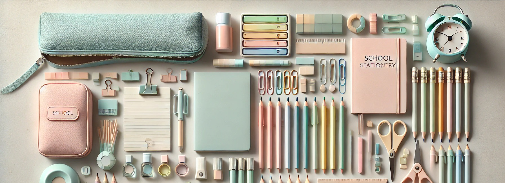

What Should a 4th Grader Know by the End of the Year?

Grade 4
Grade 4 is a time of growing independence, deeper critical thinking, and greater academic expectations. At this stage, students are expected not only to learn facts but to apply knowledge, analyze ideas, and explain their thinking clearly. Fourth grade bridges the gap between the early elementary years and the more rigorous demands of upper primary grades. So what exactly should a fourth grader know by the end of the school year? Let’s break it down.
Reading Skills
By the end of Grade 4, students are expected to:
⁕ Read and comprehend texts across various genres including fiction, nonfiction, poetry, and historical texts.
⁕ Identify theme, main idea, and supporting details.
⁕ Analyze characters, setting, plot, and conflict.
⁕ Make inferences and cite evidence to support answers.
⁕ Compare and contrast information from multiple texts.
⁕ Interpret figurative language, metaphors, and similes.
⁕ Read fluently with proper tone, rate, and expression.
Writing Skills
Fourth graders develop stronger composition and grammar skills. They should be able to:
⁕ Write well-organized multi-paragraph essays and reports.
⁕ Include an introduction, clear body paragraphs, and a conclusion.
⁕ Use transition words to link ideas (however, for instance, meanwhile).
⁕ Use proper grammar, punctuation, and sentence structure.
⁕ Write narratives, informative texts, persuasive essays, and responses to reading.
⁕ Revise and edit their work independently for clarity and accuracy.
⁕ Apply correct spelling rules and use dictionaries or spell check tools.
Mathematics
In Grade 4, math becomes more complex. By year’s end, students should be able to:
⁕ Master multiplication and division facts up to 12 × 12.
⁕ Multiply multi-digit numbers and divide with remainders.
⁕ Understand place value up to the millions.
⁕ Use factors and multiples, including concepts like prime and composite numbers.
⁕ Add and subtract multi-digit numbers with regrouping.
⁕ Compare, add, and subtract fractions with like and unlike denominators.
⁕ Understand decimals and their relationship to fractions.
⁕ Solve multi-step word problems using all four operations.
⁕ Understand and measure angles.
⁕ Convert units of measure (inches to feet, minutes to hours).
⁕ Analyze line plots, bar graphs, and charts.
Science
Fourth-grade science encourages curiosity and inquiry-based learning. Topics often include:
⁕ The scientific method: forming hypotheses, conducting experiments, and analyzing results.
⁕ Ecosystems and how organisms interact within them.
⁕ Food chains and food webs.
⁕ Earth's processes: erosion, weathering, and natural disasters.
⁕ States of matter and changes in matter.
⁕ Energy sources (renewable and non-renewable).
⁕ Electricity, magnetism, and basic circuits.
⁕ The solar system and Earth's position in it.
Social Studies
Social studies in Grade 4 often focuses on geography, history, and civics. By the end of the year, students should:
⁕ Understand map skills, including latitude, longitude, and coordinates.
⁕ Identify major regions, landforms, and bodies of water.
⁕ Learn about the history and development of their country or region.
⁕ Understand the role of government and basic civic duties.
⁕ Explore cultural diversity and the impact of immigration and colonization.
⁕ Analyze cause-and-effect relationships in historical events.
Social and Emotional Development
In Grade 4, students build self-awareness, responsibility, and social skills. They typically:
⁕ Manage time and materials with more independence.
⁕ Follow multi-step directions and complete longer-term assignments.
⁕ Demonstrate empathy, respect, and cooperation in group settings.
⁕ Accept responsibility for actions and decisions.
⁕ Handle peer conflict using appropriate communication strategies.
⁕ Show resilience when facing academic or personal challenges.
Technology and Research Skills
Fourth graders use technology more intentionally and responsibly. They should be able to:
⁕ Type full paragraphs and format basic documents.
⁕ Use search engines to find reliable sources (with guidance).
⁕ Create simple presentations (slideshows, posters, reports).
⁕ Use digital tools for collaboration (shared docs or classroom platforms).
⁕ Understand digital citizenship, including safe and respectful online behavior.
Creative Arts and Physical Education
The arts and physical development continue to play a vital role:
⁕ Express ideas through drawing, painting, sculpture, music, and drama.
⁕ Understand artistic elements such as rhythm, tone, contrast, and texture.
⁕ Participate in group performances or presentations.
⁕ Develop coordination, strength, and teamwork through physical education activities.
How Parents Can Support
⁕ Encourage independent reading and discuss books together.
⁕ Help practice math facts and strategies through real-life examples (budgeting, games).
⁕ Provide a quiet, organized workspace for homework and study.
⁕ Encourage research projects, journaling, and creative expression.
⁕ Support healthy habits: sleep, nutrition, exercise, and screen time balance.
⁕ Teach problem-solving and emotional coping strategies.
Final Thoughts
Grade 4 is all about growing in independence, confidence, and capability. Students are no longer just absorbing information - they’re analyzing it, questioning it, and expressing their own ideas. As the academic bar rises, emotional resilience and time management also become key. With encouragement, consistency, and support both at school and at home, your fourth grader will end the year prepared and motivated for the challenges of Grade 5.